§ 7.06 Besondere Liegestellen
Binnenschifffahrtsstraßen-Ordnung
1. Auf einer Liegestelle, bei der eines der Tafelzeichen E.5.4 bis E.5.15 (Anlage 7) aufgestellt ist, darf nur die Fahrzeugart stillliegen, für die das Tafelzeichen gilt.
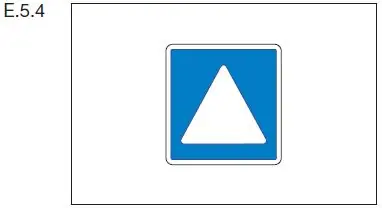 | 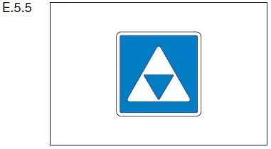 | |
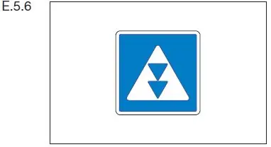 | ||
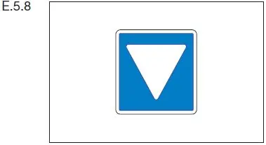 | 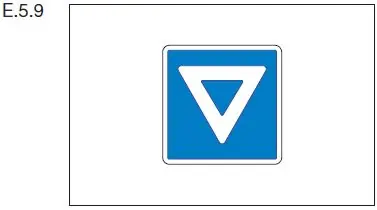 | |
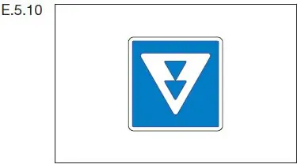 | 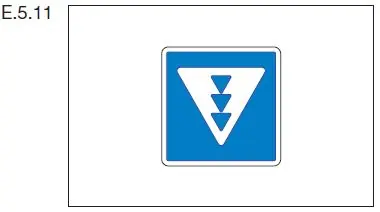 | |
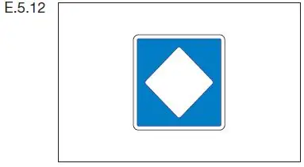 | 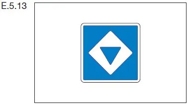 | |
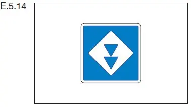 | 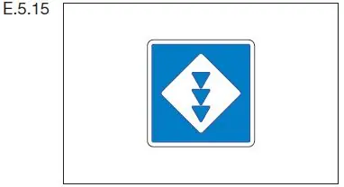 |
2. Ist für ein Fahrzeug, das nach § 3.14 Nummer 1 bis 3 zu bezeichnen ist, keine besondere Liegestelle vorgesehen und will es eine Liegestelle benutzen, bei der das Tafelzeichen E.5, E.5.4, E.5.8, E.5.12, E.6 oder E.7 (Anlage 7) aufgestellt ist, ist ihm dies nur gestattet, wenn ihm von der zuständigen Behörde ein besonderer Liegeplatz zugewiesen wird.
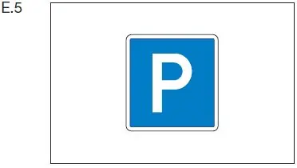 | 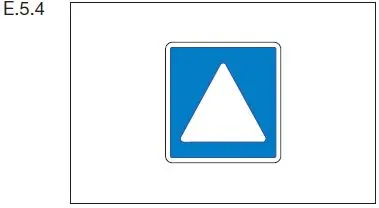 | |
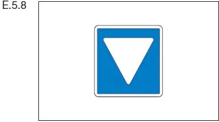 | 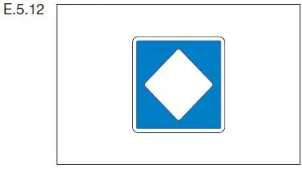 | |
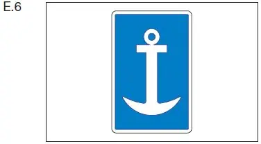 | 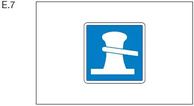 |
3. Eine Liegestelle ist, soweit nichts anderes bestimmt ist, auf der Seite der Wasserstraße, auf der das Tafelzeichen steht, vom Ufer aus und ein Fahrzeug neben dem anderen zu belegen.
4.
An einer Liegestelle, bei der das Tafelzeichen B.12 (Anlage 7) aufgestellt ist, ist ein Fahrzeug verpflichtet, sich an einen betriebsbereiten Landstromanschluss anzuschließen und seinen gesamten Bedarf an elektrischer Energie während des Stillliegens daraus zu decken. Ausnahmen vom Gebot nach Satz 1 können auf einem rechteckigen weißen zusätzlichen Schild angegeben werden, das unterhalb des Tafelzeichens B.12 angebracht ist. | B.12 | 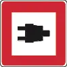 |
5. Nummer 4 ist nicht anzuwenden auf ein Fahrzeug, das während des Stillliegens ausschließlich eine Energieversorgung nutzt, die keine Geräusche sowie keine gasförmigen Schadstoffe und luftverunreinigenden Partikel verursacht.